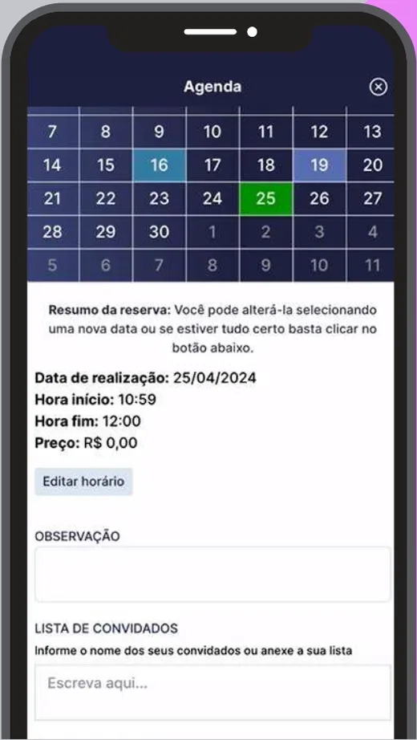
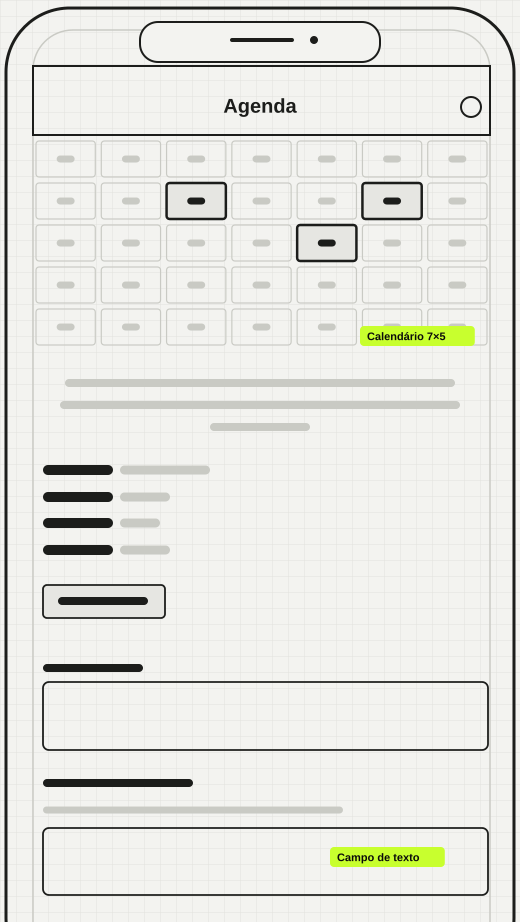
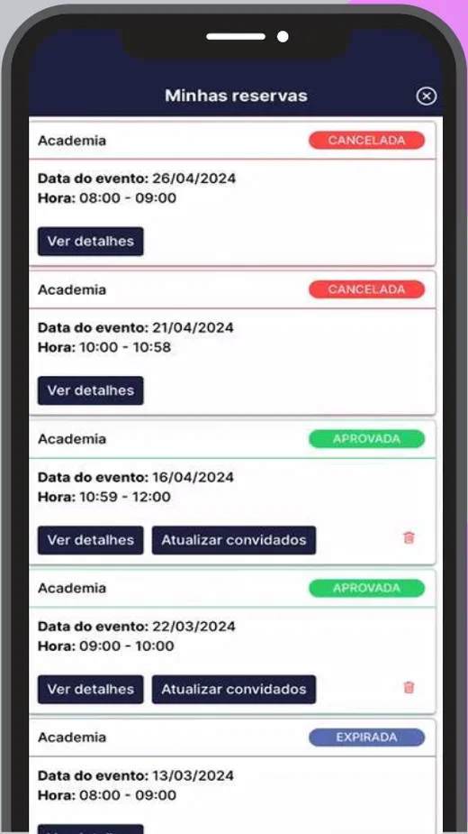
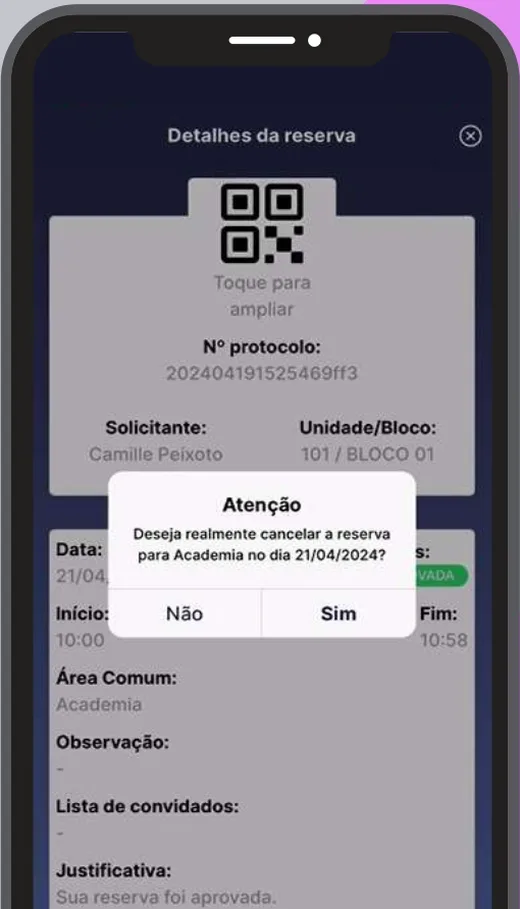
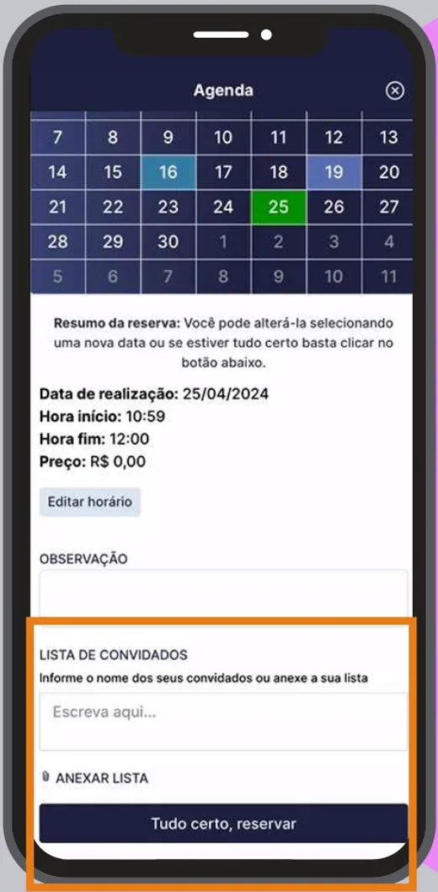
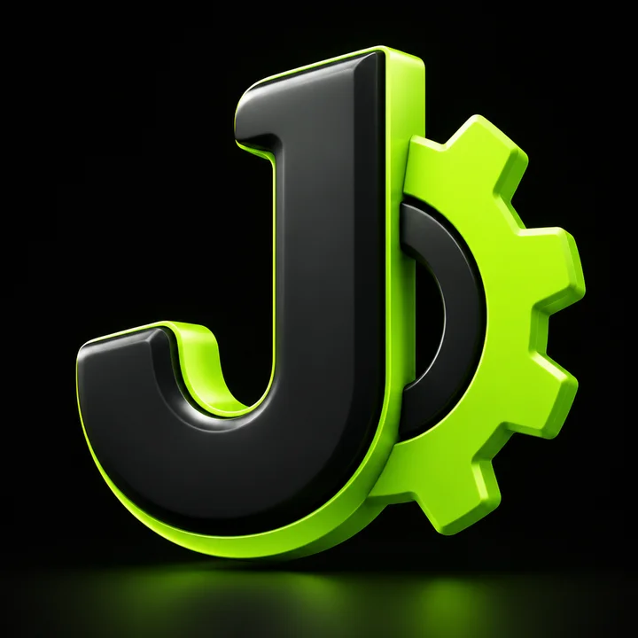

Desenho produtos que deixam a rotina simplesW 0 · Hug.
Sou Jonathan Machado. Crio apps e sistemas web centrados em quem usa, da pesquisa ao protótipo e ao acompanhamento do desenvolvimento.
- Pesquisa com usuários
- Discovery
- Personas e jornada
- Fluxos de telas
- Protótipos navegáveis
- Testes de usabilidade
- Acessibilidade
- Design System
- Layouts responsivos
- Branding
Procure no portfólio
Digite um projeto, uma habilidade ou uma experiência para ver os resultados na hora. Para perguntas abertas, peça uma resposta à IA, que lê só o conteúdo deste site.
Resultados que os usuários sentiram
- −30%de tempo gasto pelos síndicos na gestão de tarefasLista de tarefas
- +25%na taxa de conclusão de tarefasLista de tarefas
- 5heconomizadas por semana, em média, por síndicoPesquisa com síndicos
- 4.2/5de satisfação média com a plataformaPesquisa com síndicos
- 85%dos usuários recomendariam o CondomínioAppPesquisa com síndicos
- 75telas no wireframe de média fidelidade do appSistema Web e App
Números da pesquisa com síndicos e dos resultados da lista de tarefas no CondomínioApp.
O portfólio em 36 segundos
Um resumo animado com resultados, telas e cases. Não tem som: todo o conteúdo aparece em texto, e a transcrição completa fica logo abaixo.
Capítulos
Transcrição e descrição das cenas
- 0:00 Abertura
- Logo de Jonathan Machado. Texto: Jonathan Machado, UX/UI Product Designer, Rio de Janeiro.
- 0:04 Impacto
- Impacto medido no CondomínioApp: menos 30% de tempo dos síndicos na gestão de tarefas, mais 25% na conclusão de tarefas e 85% dos usuários recomendariam o app.
- 0:10 App CondomínioApp
- CondomínioApp, 2021 a 2026. Apps que organizam o dia a dia. Quatro telas do app: criar reserva, minhas reservas, convidados e cancelar reserva.
- 0:17 Antes e depois
- Da linha à interface. Um divisor passa sobre a tela de reservas e alterna entre o wireframe e a interface final.
- 0:24 Cases
- Do problema ao resultado. Capas de cinco cases: lista de tarefas, SíndicoApp, sistema web, site do CondomínioApp e identidade visual.
- 0:31 Contato
- Vamos conversar? jonathan.machadolopes@gmail.com. Agende pelo portfólio.
Projetos
- Conect+EDUEducação
Redesenho da plataforma de gestão escolar, do sistema web e dos apps de professores e alunos, com entrevistas e testes de usabilidade.
- DogzverseGames · NFT
Marketplace, dashboards, wallet e tela de jogo, além do logo e da concept art dos personagens.
- Arte CidadeEventos culturais
Protótipo de plataforma para gerir eventos de música, teatro, dança, museus e shows.
- Claro MúsicaMúsica · Telecom
Apoio ao time de produto da Imusicacorp em interfaces e fluxos dos apps Claro Música e Contestone.
CondomínioApp
Uma plataforma para centralizar e simplificar a gestão de condomínios, para o síndico que administra e para o morador que usa no dia a dia.
Avisos, reservas e pedidos circulavam em grupos de WhatsApp, sem ordem e sem segurança. O CondomínioApp reúne essas rotinas em um só lugar: portaria, controle de acesso, comunicação, reservas, correspondências, estoque, enquetes e arquivo digital.
Conduzi o redesenho da interface de toda a plataforma e participei, com a liderança, da estratégia de novos produtos. Também acompanhei o time de desenvolvimento na implementação de cada fluxo. Abaixo estão as principais funcionalidades do app do morador.
- Papel
- Product Designer Pleno
- Período
- 2021 – 2026
- Entregas
- App do morador, SíndicoApp, sistema web e site
- Usuários
- Moradores, síndicos e administradoras
- Métodos
- Entrevistas, questionários, personas, jornada, protótipos navegáveis, testes de usabilidade
Grupos de WhatsApp
- Reservas combinadas em mensagem, com conflito de horário
- Reclamações sem registro nem acompanhamento
- Visitantes liberados um a um, a cada visita
Uma plataforma só
- Agenda de áreas comuns com status em cada pedido
- Ocorrências com histórico e situação visível
- Acesso por período, carteirinha e cadastro da unidade
Da linha à interface
Cada tela final desmontada em wireframe de baixa fidelidade: estrutura, hierarquia e componentes. Arraste para comparar.


Salão de festas, academia, piscina e churrasqueira sem disputa de horário.
Criar uma reserva
O morador escolhe o dia no calendário, revisa horário e preço em um resumo e confirma.

Acompanhar o status
Cada pedido mostra onde está, com notificação a cada mudança e histórico completo.

Cancelar uma reserva
Cancelamento com confirmação para evitar engano. O horário volta a ficar livre para os vizinhos.

Lista de convidados
Os nomes vão junto com a reserva, digitados ou em anexo, e a portaria sabe quem pode entrar.
Pesquisa com usuários
Entrevistas com síndicos e moradores, questionários por e-mail e análise de concorrência.
Personas e jornada
Perfis de morador e síndico e a jornada de cada um pelas rotinas do condomínio.
Fluxos e protótipos
Fluxos de telas, componentes e layouts responsivos, com protótipos navegáveis.
Testes e handoff
Testes de usabilidade e acompanhamento do desenvolvimento em ciclos ágeis.
Meu perfil combina com a sua vaga?
Cole a descrição da vaga. A análise cruza cada requisito com as provas deste portfólio e mostra também o que não aparece aqui.
Faça uma reserva
O fluxo de reserva do CondomínioApp recriado em código. Toque nas telas como faria no app; ao lado, o porquê de cada decisão.
Toque para começar
- 1Escolher a área
Lista curta com a regra de uso de cada espaço visível antes do toque, para o morador não descobrir a restrição só no fim.
- 2Data e horário
- 3Revisar
- 4Enviada
- 5Acompanhar
Do design gráfico ao produto

Sou formado em Comunicação Visual Design pela UFRJ e comecei no design gráfico, em agências e marcas. Há cinco anos me dedico a produto: pesquiso com quem usa, desenho fluxos e interfaces e acompanho o desenvolvimento até a entrega.
Trabalho bem em times ágeis e gosto de produtos que resolvem rotinas cheias de atrito. Usabilidade e acessibilidade fazem parte do processo desde o início.
Hoje curso pós-graduação em Gestão de Produtos e tenho inglês nível B2, com um ano de vivência em Londres.
Faço
- Pesquisa com usuários
- Discovery
- Personas e jornada
- Fluxos de telas
- Protótipos navegáveis
- Testes de usabilidade
- Acessibilidade
- Design System
- Layouts responsivos
- Branding
Também sei
- HTML, CSS e JavaScript
- TypeScript e Angular
- Gestão de produto
- Vídeo e motion
Experiência
- 2021 – 2026Product Designer PlenoTechDog / CondomínioAppAtual
Redesenho das plataformas CondomínioApp e Conect+EDU, estratégia de novos produtos, pesquisa e handoff.
- 2022 – 2025UX/UI e Designer GráficoProjetos freelance
Protótipos de plataformas e apps, sites responsivos e identidades visuais.
- 2021 – 2022Product Designer / Designer ConceitualDogzverse NFT game
Interfaces, marketplace, wallet e concept art.
- 2019Product DesignerImusicacorp / Claro
Interfaces e fluxos para os apps Claro Música e Contestone.
- 2018 – 2022Designer Gráfico e DigitalFSB, Wide, MAXXGNV, Flamengo, Imprensa Oficial RJ
Campanhas, branding, editorial e apresentações.
- 2016 – 2017Designer Gráfico e DigitalCoordcom UFRJ
Layouts do site da UFRJ com foco em usabilidade e acessibilidade.
Formação
- Pós-graduação em Gestão de ProdutosDescomplica · em curso
- Bacharelado em Comunicação Visual DesignUFRJ · 2021
- TERA BootcampProduto, discovery, dados, branding e IA para negócios
- Bootcamps HowBootcampUX Design, Discovery, Acessibilidade e Gerenciamento de Produtos
- Formação Front-endDIO · HTML, CSS, JavaScript, TypeScript, Angular
Certificados9
- Design Thinking: The Beginner's GuideIxDF – Interaction Design Foundation · set. 2020 · Credencial 78801-2020-398622Verificar ↗
- Membro da Interaction Design FoundationIxDF – Interaction Design Foundation · abr. 2020 · Credencial 78801Verificar ↗
- Bootcamp UX DesignHow Bootcamps · jun. 2020
- Product Mastery: 20 Video LessonsProduct School · abr. 2020 · Credencial cert_x6l287zq
- Product MasterClass: How to Build Digital ProductsProduct School · fev. 2020 · Credencial cert_5yzhr0g7
- Hello Design ThinkingIDEO U · abr. 2020
- Fast Course – Design ThinkingEscola de Negócios Saint Paul · abr. 2020 · Credencial f574339c5294accd5396819121d2bf78
- Scrum Foundation Professional Certificate (SFPC)Certiprof · set. 2020 · Credencial 46560206Verificar ↗
- HTML5 – Introdução ao Front-endInstituto TIM Tec · mai. 2020 · Credencial cqhh2SXiVerificar ↗
No que estou trabalhando
- EstudandoPós-graduação em Gestão de Produtos
Discovery, métricas e estratégia de produto, na Descomplica.
- ConstruindoNovos produtos do CondomínioApp
Fluxos para integração com armário digital e com o sistema financeiro, além de uma proposta de crédito para condomínios.
- ExperimentandoIA aplicada ao portfólio
Este site em Angular, com busca, comparador de vagas e respostas geradas a partir do meu próprio conteúdo.
- BuscandoPróximo desafio
Conversas sobre vagas de Product Designer e projetos freelance de apps e sistemas web.
Atualizado em outubro de 2026
O sistema por trás da página
Este portfólio usa um mini design system próprio, construído em Angular com tokens CSS. Tudo abaixo é o componente real, não uma imagem.
Cores
- Sinal e ação. Nunca usado como texto sobre fundo claro.
- Texto principal e superfícies de destaque.
- Faixas pretas do topo e do contato.
- Fundo da página.
- Lime escurecido para texto com contraste.
- Texto secundário e legendas.
Tipografia
- Display · Archivo 800 · largura 118%Da linha à interface
- Corpo · Archivo 400 · 17px / 1.6Crio apps e sistemas web centrados em quem usa.
- Utilitário · IBM Plex Mono 500 · caixa altaWireframe · 75 telas
Componentes
Espaçamento
4px8px12px16px24px32px48px64px
Movimento
- Entrada
800ms · cubic-bezier(.2,.7,.2,1) - Hover
250ms · deslocamento de 3px - Movimento reduzido
Respeita a preferência do sistema
- Cor como sinal
O verde limão marca o que é ação ou estado. O resto é preto, branco e cinza.
- Estado em forma e texto
Status sempre com palavra, nunca só com cor.
- Movimento com propósito
Cada animação mostra uma mudança de estado ou convida a interagir.
Vamos conversar sobre o seu produto?
Escolha o motivo, o dia e o horário. No fim, o convite vai direto para a sua agenda e para o meu e-mail.
- 1Motivo
- 2Dia e horário
- 3Seus dados
- 4Confirmar